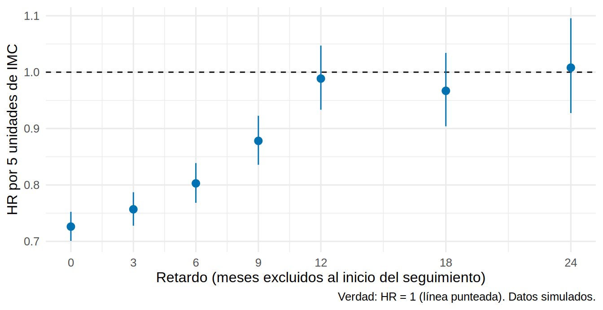
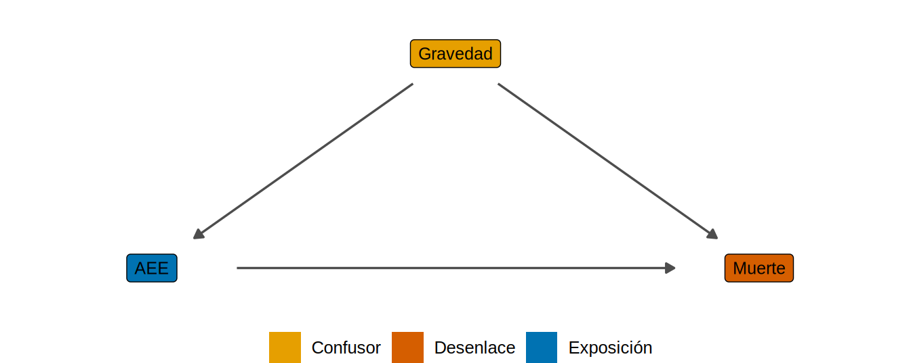

library(tidyverse)
library(survival)
source("R/funciones_epi.R")
theme_set(theme_minimal(base_size = 12))
set.seed(12)
n <- 20000
d <- tibble(
enf_subclinica = rbinom(n, 1, 0.25),
imc = rnorm(n, 27 - 3.5 * enf_subclinica, 4), # la enfermedad baja el IMC
edad = rnorm(n, 62, 10)
) |>
mutate(
base = 0.004 * exp(0.03 * (edad - 62)), # el IMC NO influye
t1 = rexp(n, base * ifelse(enf_subclinica == 1, 10, 1)), # riesgo muy alto el primer año si hay enfermedad
t_muerte = ifelse(t1 <= 12, t1, 12 + rexp(n, base)),
muerte = as.integer(t_muerte <= 36), tiempo = pmin(t_muerte, 36)
)Causalidad inversa y sesgo de indicación
La pregunta de esta herramienta: ¿qué fue primero: la “causa” o la enfermedad?
Nota🩺 Escenario
En pacientes en hemodiálisis, quienes tienen mayor IMC viven más (la llamada “paradoja de la obesidad”). Y en pacientes con ERC, quienes reciben eritropoyetina (AEE) mueren más. ¿Hay que engordar a los pacientes y retirar los AEE? Probablemente no. En el primer caso la enfermedad hace bajar el peso (causalidad inversa); en el segundo, el fármaco se da a quienes ya van peor (sesgo de indicación).
Lo que vamos a hacer
- Reproducir dos sesgos hermanos con simulaciones en las que conocemos la verdad.
- Ver el análisis con retardo (lag) como remedio de la causalidad inversa.
- Ver por qué el sesgo de indicación puede ir en ambas direcciones, y qué hacer.
Paso 1: dos sesgos hermanos
- Causalidad inversa: lo que parece la causa es en realidad una consecuencia (o un marcador) de la enfermedad que se estudia.
- Sesgo de indicación (confounding by indication): el fármaco se prescribe a quienes ya tienen mayor o menor riesgo, de modo que la indicación misma confunde la comparación.
Ambos hacen que una exposición inocua parezca dañina, o que una protectora parezca inútil. Ambos se ven en un DAG como una causa común no controlada de exposición y desenlace.
Paso 2: causalidad inversa, la “paradoja del peso” en diálisis
Simulamos que el IMC no tiene ningún efecto sobre la mortalidad (HR = 1), pero una enfermedad subclínica (no observada) baja el IMC y multiplica por 10 el riesgo de morir durante el primer año:

La enfermedad subclínica es causa común del IMC bajo y de la muerte; no hay flecha del IMC a la muerte. El análisis ingenuo, por cada 5 unidades más de IMC:
HR.I(imc/5) 2.5 % 97.5 %
0.73 0.70 0.75 Qué vemos. El HR es 0.73 por cada 5 unidades de IMC: parece que engordar protege, cuando la verdad es ningún efecto (HR = 1). Es confusión por una variable no medida (la enfermedad subclínica), con la particularidad de que ocurre antes del desenlace y lo “anuncia”.
El remedio: análisis con retardo (lag)
Si el efecto de la enfermedad es temprano, se excluye el seguimiento inicial: se empieza a contar después de un periodo de espera, de modo que quienes ya estaban enfermos y mueren pronto no entran. Con un retardo de 12 meses:
HR.I(imc/5) 2.5 % 97.5 %
0.99 0.93 1.05 Con un retardo de 12 meses el HR vuelve a 0.99 (la verdad: 1). ¿Y con retardos más cortos? Probemos varios y dibujemos el HR en función del retardo:
retardos <- c(0, 3, 6, 9, 12, 18, 24)
hr_por_lag <- map_dfr(retardos, \(l) {
m <- coxph(Surv(tiempo - l, muerte) ~ I(imc / 5) + I(edad / 10), data = filter(d, tiempo > l))
tibble(retardo = l, HR = unname(exp(coef(m)[1])),
inf = exp(confint(m)[1, 1]), sup = exp(confint(m)[1, 2]))
})
ggplot(hr_por_lag, aes(retardo, HR, ymin = inf, ymax = sup)) +
geom_hline(yintercept = 1, linetype = "dashed") +
geom_pointrange(color = "#0072B2") +
scale_x_continuous(breaks = retardos) +
labs(x = "Retardo (meses excluidos al inicio del seguimiento)", y = "HR por 5 unidades de IMC",
caption = "Verdad: HR = 1 (línea punteada). Datos simulados.")
El HR sube hacia 1 a medida que se alarga el retardo y se estabiliza cuando el retardo supera el tiempo de latencia clínica de la enfermedad (aquí, 12 meses). Con un retardo corto (6 meses) el sesgo persiste (HR 0.8). Elige el retardo según la latencia clínica. Y si la enfermedad confunde de forma permanente, el retardo no basta: hay que medir o ajustar la enfermedad.
Otras estrategias: usar la exposición medida antes de la enfermedad (peso previo a la entrada a diálisis), estudiar el cambio de peso en vez del peso actual (distinguir pérdida involuntaria de estabilidad) y ajustar por marcadores de enfermedad (albúmina, inflamación), sabiendo que reduce pero no elimina el sesgo.
Paso 3: sesgo de indicación, los más graves reciben el fármaco
En la práctica, un tratamiento se indica a quien lo necesita. Si lo que lo motiva (la gravedad) también influye en el desenlace, comparar tratados con no tratados es injusto. Ejemplo: AEE en ERC. Los pacientes más graves (más inflamados, con peor anemia) reciben más AEE y mueren más; el fármaco parece dañino aunque sea neutro o ligeramente beneficioso.

Simulamos un AEE con efecto protector real (HR = 0.86):
set.seed(5)
n <- 20000
gravedad <- rnorm(n) # variable de gravedad
aee <- rbinom(n, 1, plogis(-0.2 + 1.2 * gravedad)) # los más graves reciben más AEE
h <- 0.01 * exp(0.9 * gravedad - 0.15 * aee) # verdad: HR = exp(-0.15) = 0.86
t_muerte <- rexp(n, h)
d3 <- tibble(aee, gravedad, tiempo = pmin(t_muerte, 36), muerte = as.integer(t_muerte <= 36))
hr3 <- function(f) unname(exp(coef(coxph(f, data = d3))[1]))
hrs_ind <- c(`Verdad` = exp(-0.15),
`Sin ajustar (sesgo de indicación)` = hr3(Surv(tiempo, muerte) ~ aee),
`Ajustando por gravedad` = hr3(Surv(tiempo, muerte) ~ aee + gravedad))
round(hrs_ind, 2) Verdad Sin ajustar (sesgo de indicación)
0.86 1.86
Ajustando por gravedad
0.85 El HR crudo es 1.9 (el AEE “casi duplica la mortalidad”) frente a una verdad de 0.86. Con la gravedad bien medida se recupera el efecto (0.85).
Contrasta con el ejemplo del iSGLT2 de este libro (Cap. 3): allí los más sanos reciben el fármaco y el sesgo hace que parezca demasiado bueno. El sesgo de indicación puede ir en ambas direcciones, según quién reciba el tratamiento.
Cómo reducirlo
- Mide y ajusta por las variables de indicación (el motivo de la prescripción): gravedad, comorbilidad, laboratorios.
- Comparador activo: compara el fármaco con otro fármaco para la misma indicación (iSGLT2 frente a iDPP4), no con “ninguno”. Así ambos grupos tienen indicación similar.
- Diseño de nuevo usuario: incluye solo a quienes inician el tratamiento durante el estudio, con tiempo cero en el inicio (10.5).
- Puntaje de propensión (Cap. 12) para resumir y balancear la indicación.
- Controles negativos y análisis de sensibilidad (E-value) para la confusión residual (10.6).
Trampas frecuentes
Advertencia⚠️ “Ajustar por todo” tampoco es la solución
Ajustar por la gravedad funciona si está bien medida y es todo lo que influye en la prescripción. En la práctica, parte de la decisión clínica es inobservable (impresión del médico, fragilidad, preferencias del paciente): ese es el sesgo de indicación residual, y no se corrige con más covariables. Se cuantifica (10.6) y se reduce con diseño (comparador activo, nuevos usuarios).
Importante🎯 En resumen
- Causalidad inversa: la enfermedad (a veces subclínica) causa la “exposición” (bajo peso, baja albúmina), que parece causar el desenlace. Se mitiga con retardos y con exposiciones medidas antes de la enfermedad.
- Sesgo de indicación: el tratamiento se asigna según el pronóstico. Ajusta por la indicación, usa comparador activo y nuevos usuarios.
- Puede hacer que un fármaco protector parezca dañino (AEE) o que uno neutro parezca demasiado bueno (iSGLT2).
- Pregunta siempre: ¿qué fue primero, y por qué se le dio el fármaco a este paciente?
Ejercicio
- Modifica el retardo a 24 meses en el análisis del IMC. ¿Cuánto se acerca el HR a 1? ¿Qué se pierde?
- Simula que el AEE tiene efecto dañino real (HR 1.2) y que se asigna según la gravedad. ¿Puedes recuperar 1.2?
- Piensa en un fármaco que uses en tu servicio: ¿quién lo recibe? ¿Qué comparador activo sería razonable?